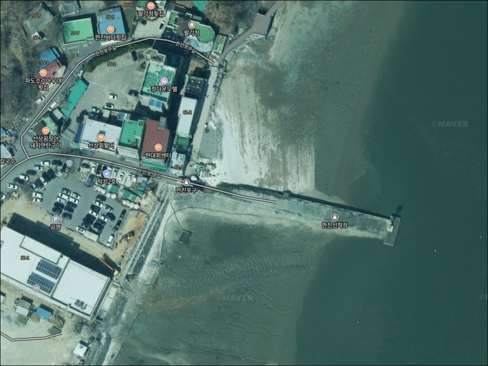
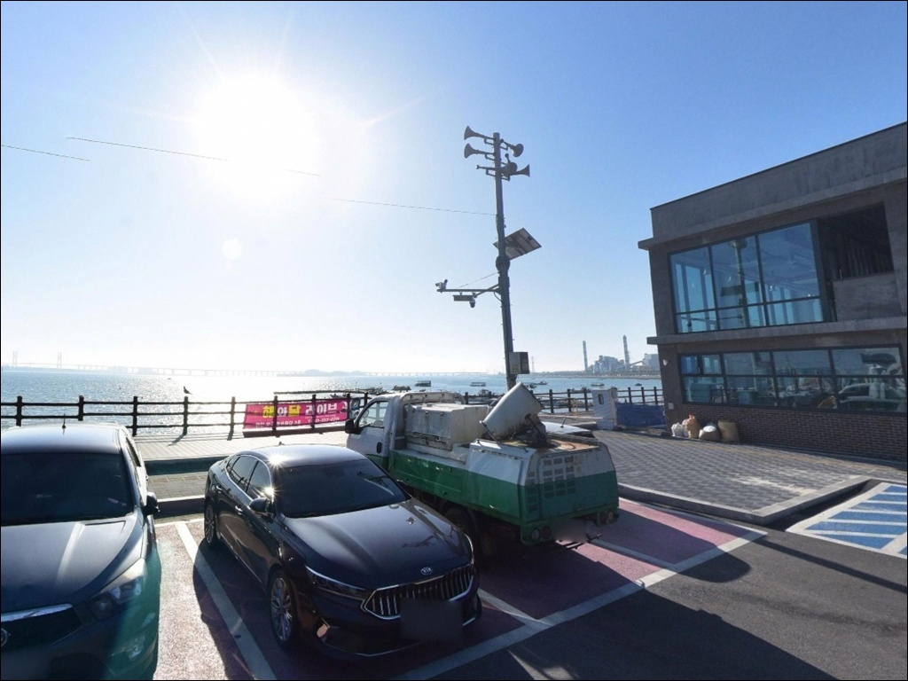
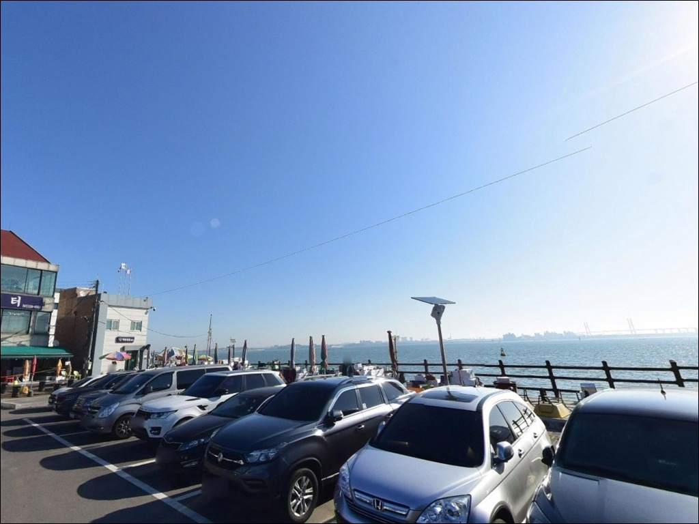
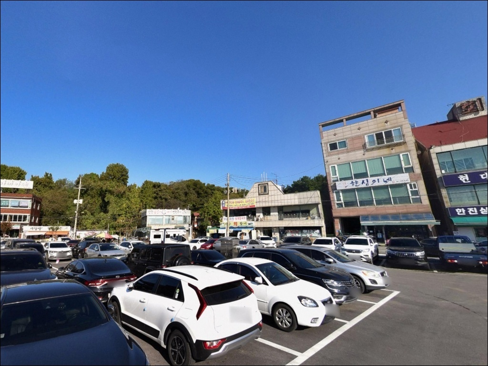
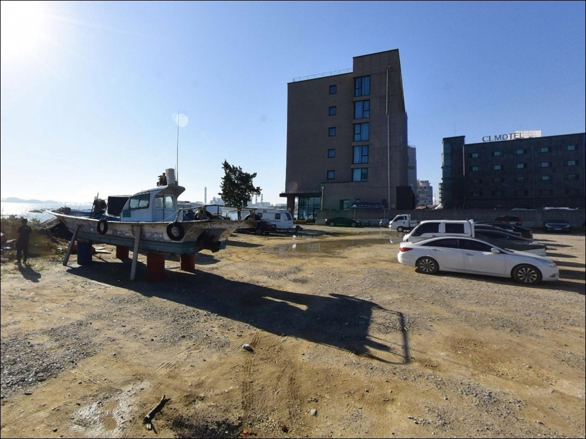
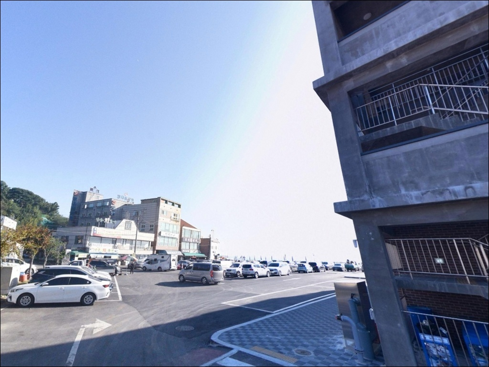
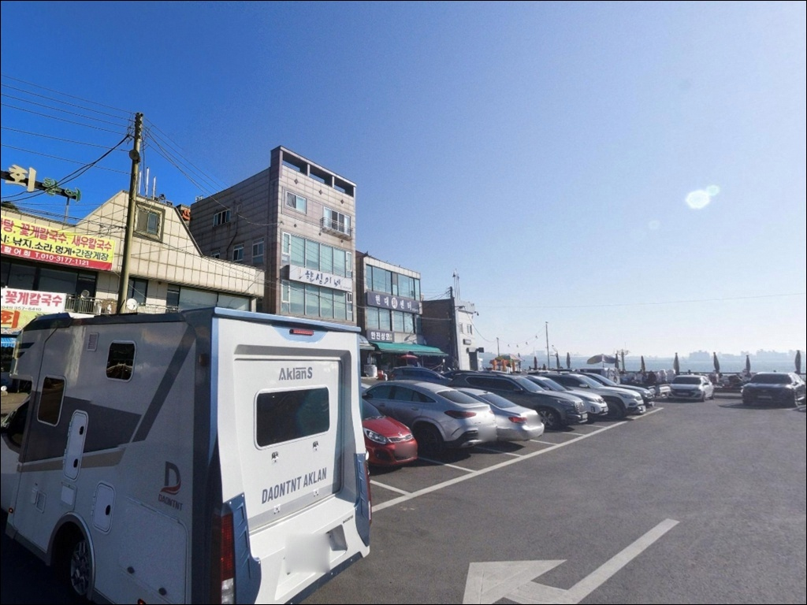
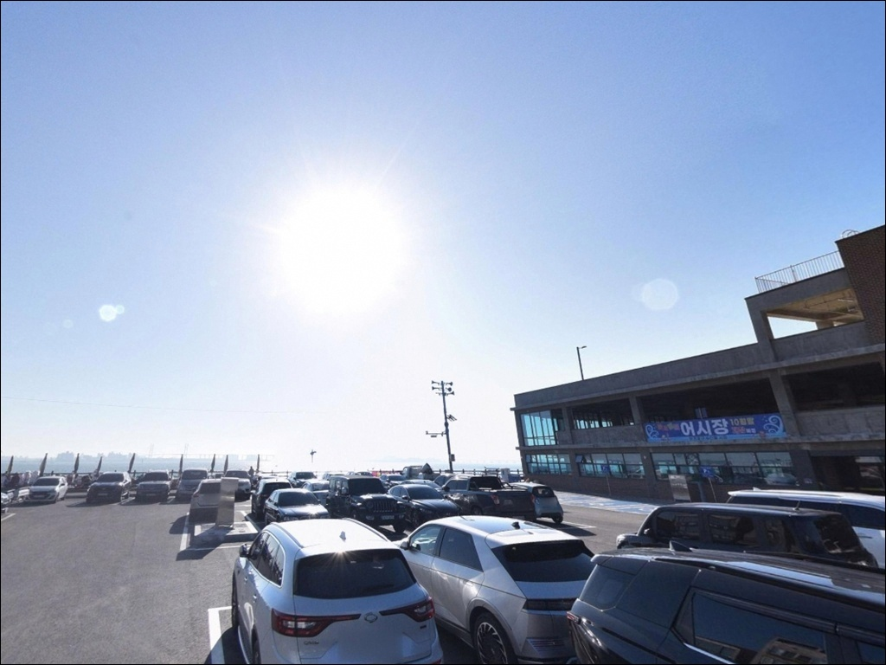
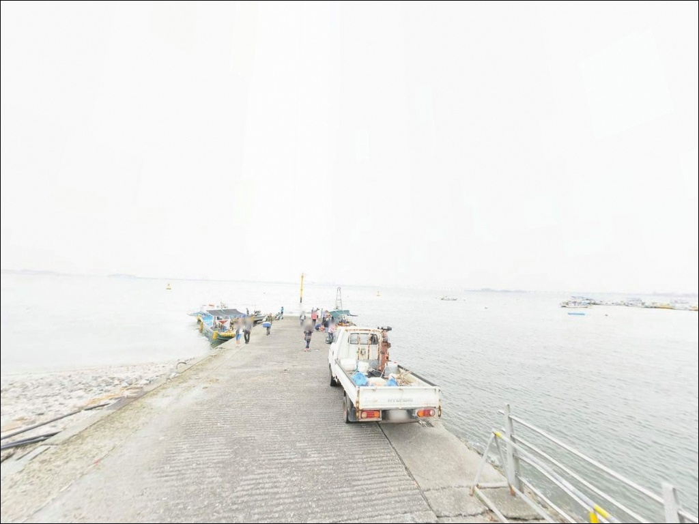

한진포구(한진선착장), 충남 당진시 고요한 수면을 바라보며 차박, 낚시를 즐기기 좋은 해안
이 페이지에는 광고(제휴 링크 포함)가 있으며, 광고 링크를 통해 구매하면 운영자가 판매 수익 또는 수수료를 받을 수 있습니다. 포인트 사진: 카카오맵 스카이뷰·로드뷰. 이 페이지의 지도·사진 이미지는 카카오맵의 실제 서비스 이미지와 다를 수 있습니다.


포인트 안내
한진포구
충남 당진시 송악읍 한진리 100
물때 확인 없이 한진포구를 찾으면
간조 시 갯벌이 드러나
선착장 주변 수심이 사라지는 상황을
맞닥뜨릴 수 있습니다.
서해 아산만 내만 환경에서는
조수간만의 차가 크게 작용해
만조와 간조의 낚시 가능 여건이
완전히 달라지는 편입니다.
이 글은 한진포구의
진입 환경과 지형 구조, 물때 기준,
낚시 스타일별 공략 조건을 중심으로 정리했습니다.
조황 단정이나 특정 어종 보장은
이 글의 범위에 포함되지 않습니다.

1. 진입 동선과 포인트 접근성
한진포구는 서해안고속도로 송악IC에서
해안선을 따라 5~10분 거리에 있습니다.
진입로는 포장도로가 잘 이어져 있어
승용차부터 중형 SUV까지
접근 난도가 낮은 편입니다.
다만 포구 안쪽 상점가 구간은
차량 통행 폭이 좁아지는 구간이 있어
처음 방문이라면 천천히 진입하는 편이 좋습니다.
주차는 선착장 인근 공영주차장을
기본으로 활용하면 됩니다.
무료 운영이 확인된 주차장으로,
포구 방문객과 낚시객 모두 이용하는 공간입니다.
어선 작업 동선을 막지 않는 자리를
선택하는 것이 기본 매너입니다.
포구 주변으로 해안산책로가 조성되어 있어
낚시 구간과 보행자 동선이
겹치는 구간이 있을 수 있습니다.
자리를 잡기 전에 산책로와의 간섭 여부를
먼저 확인하는 편이 좋습니다.

2. 차박 환경과 야간 체류 여건
한진포구는 관광 인프라가 갖춰진 포구로
낮 동안에는 산책객과 어시장 방문객이
꽤 있는 분위기입니다.
야간에는 상점가 마감 이후 유동인구가 줄어들어
비교적 조용해지는 편이지만,
완전한 고립형 차박보다는 마을형 포구 분위기로
보는 편이 정확합니다.
포구 주변에는 횟집과 식당가가 형성되어 있어
야간에도 가로등이 어느 정도 확보된 환경입니다.
아산만 내만 구조 특성상
외해 직접 노출이 적어
강한 너울이 들어오는 환경은 아닌 편이지만,
기상 예보 확인은 출발 당일 아침에도
빠뜨리지 않는 것이 좋습니다.
차박이란 차량을 숙박 공간으로 활용하며
현장에서 하룻밤 머무는 여행 방식입니다.
한진포구는 공영주차장이 있어
차박 기점으로 활용할 수 있지만,
주차 공간의 여유 여부는
방문 시간대와 성수기에 따라 달라질 수 있습니다.


3. 주변 편의시설 및 인프라 현황
포구 바로 옆으로 어시장과
좌판 수산물 난전이 형성되어 있고,
선상횟집과 해물칼국수집 등
식당이 밀집해 있습니다.
낚시 전후로 현지 수산물을 이용하기
수월한 인프라가 포구 안에 갖춰진 편입니다.
해안산책로와 전망대가 조성되어 있어
낚시를 마친 뒤 포구 주변을 돌아볼 수 있습니다.
선착장에서 이어지는 741m 산책로는
포구 분위기를 살피기 좋은 동선이며,
서해대교를 정면으로 바라보는
조망 여건이 갖춰진 구간이기도 합니다.
편의점과 주유소는
송악IC 방향 내륙 쪽으로 이동해야
이용이 가능합니다.
포구 자체에서 생필품을 해결하기는 어려운 구조로,
출발 전에 필요한 물품을
갖추고 오는 편이 좋습니다.

4. 방문 전 반드시 챙겨야 할 준비사항
한진포구 방문 전에
가장 먼저 확인할 것은 물때입니다.
바다타임에서 당진 기준 물때를 미리 확인하고
만조 전후 2시간에 맞춰 출발 시각을 조정하는 것이
기본 전략입니다.
사리 전후에는 조류 변화가 강해지는 구간도 있어
채비 컨트롤이 불안정해질 수 있습니다.
원투낚시를 주력으로 준비한다면
봉돌 무게 선택이 중요합니다.
조류가 약한 구간에는 가벼운 봉돌로도
자리를 잡을 수 있지만,
조류가 살아나는 시간대에는
봉돌을 올려야 채비가 흘러내려가지 않습니다.
여분 채비는 넉넉히 준비하는 편이 좋습니다.
해안산책로와 낚시 구간이 인접한 만큼
캐스팅 시 보행자 동선과의 간섭 여부를
현장에서 먼저 확인하고 자리를 잡아야 합니다.
방파제와 선착장 이용 시
구명조끼는 기본 안전 장비이며,
야간 출조라면 헤드랜턴도 반드시 챙겨야 합니다.

5. 지형 기반 낚시 여건 분석
한진포구는 아산만 서쪽에 자리한
내만형 소형 포구입니다.
선착장과 방파제가 함께 있는 구조로,
포구 정면은 서해대교가 내다보이는
아산만 수역을 향하고 있습니다.
내만 환경 특성상 외해 직접 노출이 적어
파고가 낮고 조류 흐름이 완만한 편입니다.
선착장 끝단과 방파제 모서리 구간은
주변보다 수심 변화가 있는 편입니다.
만조 전후에는 이 구간에서
조류가 느껴지는 경우가 있어
원투 채비가 자리를 잡기 좋은 타이밍이 됩니다.
간조 때는 선착장 주변이 갯벌로 바뀌어
낚시 가능 구간이 크게 줄어드는 편입니다.
바닥 지형은 진흙과 모래가 혼합된
서해 내만형 패턴으로 보입니다.
조류가 약한 시간대에는 채비가
바닥에 붙는 경향이 있어
밑걸림이 발생할 수 있으며,
방파제 석축 주변은
루어 탐색이 가능한 구간입니다.
최신 조황은 가기 전에
꼭 검색해 보시기 바랍니다.


6. 포인트에 어울리는 낚시 스타일
이 포구에서 가장 기본적인 낚시는
원투낚시입니다.
선착장 끝단이나 방파제에서
외항 방향으로 채비를 던져
바닥층을 노리는 방식이 지형 구조에 잘 맞습니다.
만조 전후로 수심이 확보되는 시간대에
망둑어, 붕장어, 숭어, 노래미 등
서해 내만 연안 어종을 기대해 볼 수 있는 편입니다.
방파제 외항 석축 주변에서
가벼운 지그헤드 채비로
우럭이나 노래미를 노리는 루어낚시도
시도해 볼 수 있습니다.
다만 내만형 구조에서 조류 흐름이
약한 시간대에는 루어 반응이 떨어지는 편이라,
조류가 느껴지는 구간과 시간대를
선택하는 것이 중요합니다.
에깅이란 갑오징어·무늬오징어를 대상으로
에기(인조 미끼)를 사용하는 루어낚시 방식입니다.
가을철 주꾸미·갑오징어 시즌이 겹치는 시기에는
선착장 주변 수심이 확보되는 구간에서
만조 전후 타이밍에 에깅 채비로
탐색해 볼 수 있는 조건이 갖춰집니다.
내항 쪽 잔잔한 수면 조건을 활용한
찌낚시도 이 포구에 어울리는 스타일입니다.
조류가 완만한 내항 구간에서
표층~중층 어종을 노리기 좋은 방식으로,
원투와 병행하면
같은 자리에서 복수 공략이 가능합니다.

7. 대안 포인트와 플랜 B 동선
한진포구 조황이 기대에 미치지 않거나
조류 여건이 맞지 않을 때는
장고항이 당진권 낚시의 실질적인 대안 거점입니다.
당진 석문면에 위치한 장고항은
선상낚시 출조 인프라가 갖춰져 있고
방파제 끝단 연안낚시도 가능한 구조로,
서해 우럭·주꾸미 출조가 활발한 포인트입니다.
같은 해안선 위에 있는 안섬포구도
가까운 대안으로 고려할 수 있습니다.
한진포구보다 소규모이지만
방파제 낚시 기점으로 활용할 수 있는 구조이며,
두 포구를 묶어서 하루 동선으로 운용하면
이동 효율이 높은 편입니다.
석문방조제는 당진 해안선에서
원투낚시와 루어낚시를 넓게 펼칠 수 있는 공간입니다.
방파제 구조가 넓어 자리 선택의 폭이 크고,
한진포구보다 개방감 있는 조건을 원하는
낚시인에게 유효한 대안 포인트입니다.

물때 맞추면 달라지는 포구,
한진포구 출조 기준
원투낚시와 루어낚시를 즐기는 낚시인이라면
한진포구는 수도권에서 접근하기 수월한
서해 내만형 포구로 활용할 수 있습니다.
만조 전후 타이밍을 맞추는 것이
이 포구에서 성과를 거두는 핵심 조건이며,
그 타이밍을 확보했다면 원투 바닥낚시와
방파제 루어를 병행하기 좋은 구조입니다.
반면 물때 확인 없이
간조 시간대에 도착하거나,
완전한 고립형 차박을 기대하고 찾는다면
다소 실망할 수 있는 포인트이기도 합니다.
포구 어시장과 공영주차장이 갖춰져 있어
편의 면에서는 불편함이 적지만,
낮 동안 유동인구가 있다는 점은
감안해야 합니다.
가을 주꾸미·갑오징어 시즌이 겹치는 시기에
에깅을 겸한 차박 출조를 계획한다면,
물때 확인과 채비 준비를 갖추고
만조 전후를 노리는 것이
한진포구를 제대로 활용하는 방법입니다.
서해대교를 배경으로 물때에 맞게
자리를 잡는 조용한 출조가
이 포구의 가장 잘 어울리는 풍경입니다.